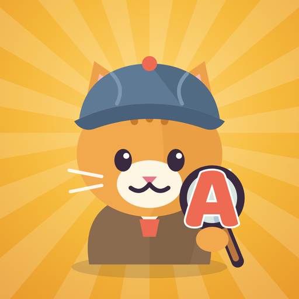

Saklı Harf
Resimli Bilmece
Bilmeceyi oku, cevabın harflerini resmin içinde bul. Çay bahçesinden sahafa, balıkçı limanından lunaparka; her resimde yeni bir bilmece.
Tucked Letters: read the riddle, then find the letters of the answer hidden in a cozy hand-drawn picture.